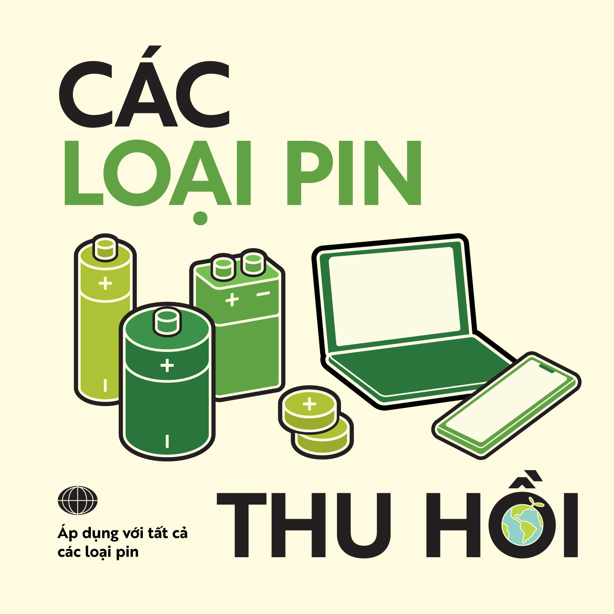
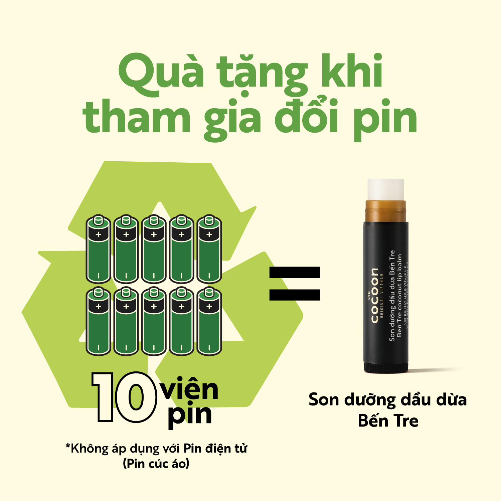

Chương trình " Thu hồi pin cũ - Bảo vệ trái đất xanh"
By Giang Huong
Nhằm chung tay hạn chế những hiểm họa mà pin đã hết hạn sử dụng sẽ gây ra cho môi trường tự nhiên và sức khỏe của con người khi không được xử lí đúng cách, Cocoon và trường ĐH Sư Phạm TP.HCM kết hợp tổ chức chương trình "Thu hồi pin cũ - Bảo vệ trái đất xanh".

Chương trình sẽ tiếp nhận tất cả các loại pin cũ bao gồm: Pin AA, Pin AAA, Pin C, Pin D, Pin Lap top, Pin điện thoại, Pin điện tử….

10 viên pin cũ bất kì khi mang đến các trạm thu hồi bạn sẽ nhận được 1 Son dưỡng dầu dừa Bến Tre trị giá 32.000đ
Lưu ý:
• Quà tặng không áp dụng với pin điện tử (hay còn gọi là pin cúc áo)
• Áp dụng 1 quà tặng/1 lượt đổi
• Thời gian đổi quà tặng: từ ngày 5/5 - 6/6/2022
Danh sách các điểm thu hồi pin cũ tại TP.HCM:
• Quận 1:
- Watsons Bitexco: Số 2 Hải Triều, Phường Bến Nghé, Quận 1 Hồ Chí Minh, Phường Bến Nghé, Quận 1
- Watsons Vincom Đồng khởi: Lầu B2–05, 72 Lê Thánh Tôn, Phường Bến Nghé, Quận 1
- Matsumoto Kiyoshi Vincom Đồng Khởi: 72 Lê Thánh Tôn, Bến Nghé, Quận 1
- The Hive District 1 - 26 Huỳnh Khương Ninh, Phường Đa Kao, Quận 1
• Quận 3:
- Thế giới skinfood: 365 Lê Văn Sĩ, phường 12, Quận 3
- Quận Đoàn quận 3: 274 Võ Thị Sáu, phường Võ Thị Sáu, Q3
- Trường THPT Nguyễn Thị Minh Khai: 275 Điện Biên Phủ, Võ Thị Sáu, Quận 3
- Trường TH Trương Quyền: 946 Trường Sa, Phường 13, Quận 3
- Trường THCS Bạch Đằng: 42 Lê Văn Sỹ, Phường 14, Quận 3
- Trường THCS Colette: 10 Hồ Xuân Hương, Phường Võ Thị Sáu, Quận 3
• Quận 4:
- Hasaki: 223 Khánh Hội, Phường 3, Quận 4
• Quận 5:
- Beauty Box: 85B - 85C, Nguyễn Trãi, Phường 2, Quận 5
- Trường Đại học Sư Phạm TP. HCM: 280 An Dương Vương, Phường 4, quận 5
- Quận Đoàn quận 5: 118 Ngô Quyền, Phường 8, Quận 5, TP.HCM
- Trường THPT Chuyên Lê Hồng Phong: 235 Nguyễn Văn Cừ, P4, Quận 5
- Trường THPT Hùng Vương: 124 Hồng Bàng, P12, Quận 5
- Trường THPT Trần Khai Nguyên: 225 Nguyễn Tri Phương, P9, Quận 5
- Trung tâm GDTX Chu Văn An: 546 Ngô Gia Tự, P9, Quận 5
- Trường Trung cấp nghề KTCN Hùng Vương: 161 Nguyễn Chí Thanh, Phường 12, Quận 5
• Quận 7:
- Matsumoto Kiyoshi Crescent Mall: BF1 Cressent Mall 101 Tôn Dật Tiên, Phường Tân Phú, Quận 7
• Quận 9:
- Guardian: 118 Lê Văn Việt, Phường Hiệp Phú, Quận 9
- Beauty Garden: 435 Lê Văn Việt, Tăng Nhơn Phú A, Quận 9
• Quận 10:
- Hasaki: 555 Đường 3/2, phường 08, quận 10
- Matsumoto Kiyoshi Vạn Hạnh Mall: 11 Sư Vạn Hạnh, Phường 12, Quận 10
- Glam Beautique tại Aeon Vạn Hạnh Mall: 11 Sư Vạn Hạnh, Quận 10
- Quận Đoàn quận 10: 139 Bắc Hải, Phường 14, Quận 10
- Trường THCS - THPT Diên Hồng: 11 Thành Thái, Phường 14, Quận 10
- Trường THCS - THPT Sương Nguyệt Anh: 249 Hòa Hảo, Phường 2, Quận 10
- Trường THPT Nguyễn Du: XX1 Đồng Nai, Phường 15, Quận 10
- Trung tâm GDNN-GDTX Quận 10: 367 Cách Mạng Tháng 8, Phường 12, Quận 10
• Quận Bình Thạnh:
- Guardian: 13 Đường Nguyễn Gia Trí, phường 25, quận Bình Thạnh
- Hasaki: 167 Nguyễn Xí, Phường 26, quận Bình Thạnh
• Quận Phú Nhuận:
- Glam Beautique tại Aeon Newton: Tầng trệt Newton, 38 Trương Quốc Dung, Q. Phú Nhuận
- Beauty Garden: 280 Phan Đình Phùng, phường 3, Quận Phú Nhuận
• Quận Gò Vấp:
- Guardian: 617 Quang Trung, phường 11, quận Gò Vấp
- Hasaki: 657 B Quang Trung, phường 11, quận Gò Vấp
- Hasaki: 447 Phan Văn Trị, phường 5, quận Gò Vấp
- Hasaki: 402 Lê Đức Thọ, quận Gò Vấp
- NANA Beauty: 366A6 Phan Văn Trị, p5, quận Gò Vấp
• Quận Tân Phú:
- Hasaki: 311 Tây Thạnh, quận Tân Phú
- Glam Beautique tại Aeon Tân Phú, 30 Tân Thắng, Sơn Kỳ, quận Tân Phú
- Beauty Box tại AEON Mall Tân Phú: G16 tầng trệt, 30 Bờ Bao Tân Thắng, Phường Sơn Kỳ, Quận Tân Phú
- Lam Thảo Cosmetics: 34 Trần Hưng Đạo, Phường Tân Sơn Nhì, Quận Tân Phú
• Quận Bình Tân:
- Guardian: 296 Lê Văn Quới, KP15, phường Bình Hưng Hòa A, quận Bình Tân
- Hasaki: 296-304 Lê Văn Quới, phường Bình Hưng Hòa A, quận Bình Tân
- Glam Beautique tại Aeon Bình Tân: 1 Đường Số 17A, phường Bình Trị Đông B, quận Bình Tân
•Huyện Bình Chánh:
- Guardian: 33-37 Đường 9A, KDC Trung Sơn, Bình Hưng, Bình Chánh
- Hasaki: 1261 Phạm Hùng, ấp 4A, Xã Bình Hưng, Bình Chánh
• TP Thủ Đức:
- Hasaki: 15-17 Võ Văn Ngân, phường Linh Chiểu, TP. Thủ Đức
- Glam Beautique tại Aeon Giga Mall: 240 Phạm Văn Đồng, Phường Hiệp Bình Chánh, TP. Thủ Đức
- The Hive Thảo Điền - 94 Xuân Thủy, Phường Thảo Điền, TP. Thủ Đức
- The Hive Villa - 29 Nguyễn Bá Lân, TP. Thủ Đức
Cocoon sẽ tiếp tục cập nhật các điểm thu hồi pin cũ
Cùng chuẩn bị pin cũ và mang đến cửa hàng gần bạn nhất để cùng thực hành sống xanh với Cocoon nhé!